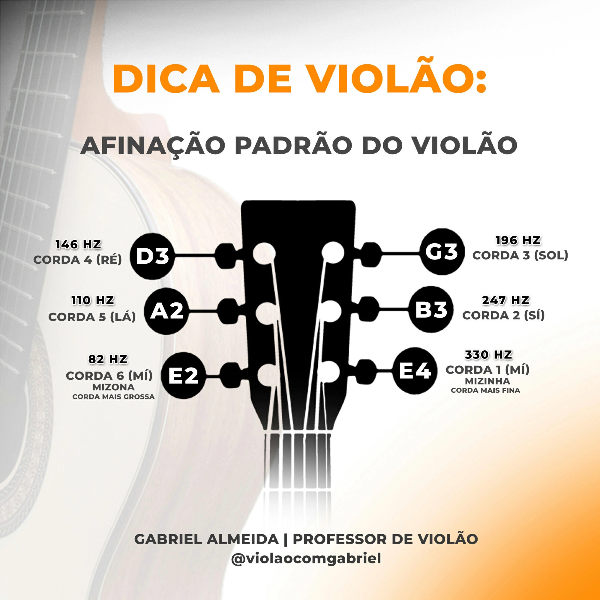
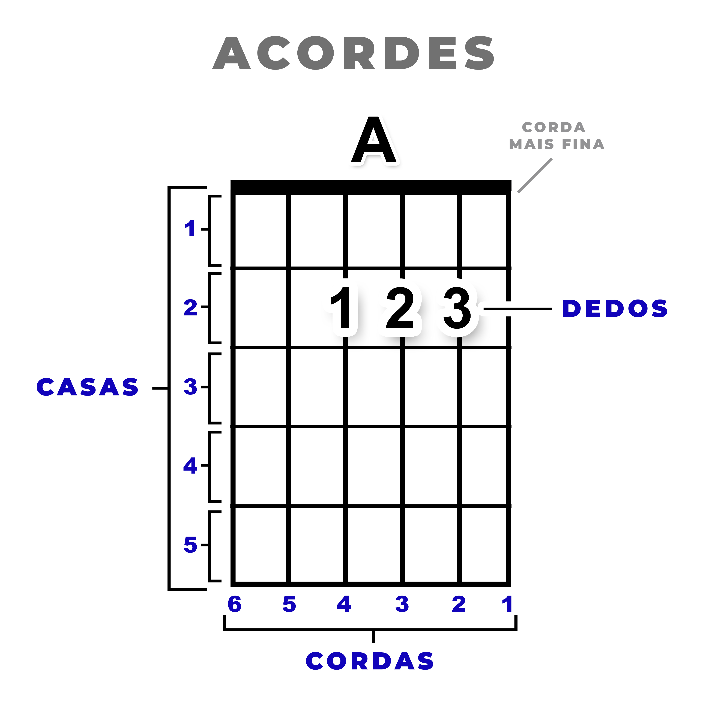
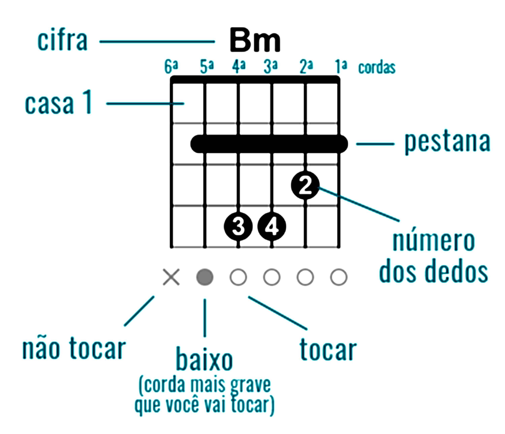
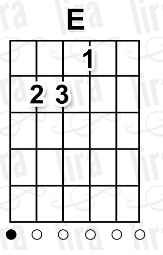
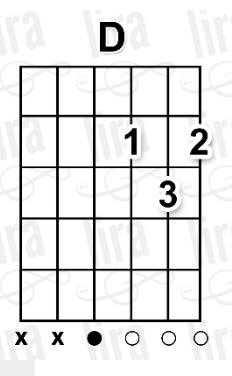

Aulas para Iniciantes do Zero no Violão
Por Gabriel Almeida
Aula 0 - Ainda não tem um violão?
Veja como escolher um violão ideal para iniciantes:
Aula 1 - Como Afinar o Violão

Aula 2 - Como segurar o violão?
Aula 3 - A primeira coisa que você deve aprender no violão


Como se lê esse acorde: Lá maior

Como se lê esse acorde: Mi maior

Como se lê esse acorde: Ré maior
Como deixar o som do acorde bonito
Seu primeiro ritmo - Guarânia
Ritmo um pouco mais difícil: Rock